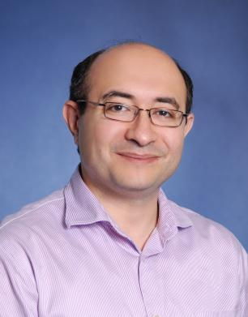

Electronics and Communication Engineering Department
Faculty

Contact
Office: KAIS 4052
Electrical and Computer Engineering
The University of British Columbia
4052 - 2332 Main Mall
Vancouver BC V6T 1Z4
Canada
purang@ece.ubc.ca
(604) 827-4741
(604) 822-5949
Website:
http://www.ece.ubc.ca/~purang/
- professorpurang-abolmaesumiBiomedical Engineering with emphasis on computer-assisted surgery, image-guided therapy and medical image analysis. Purang Abolmaesumi received his BSc (1995) and MSc (1997) from Sharif University of Technology, Iran, and his PhD (2002) from UBC, all in electrical engineering. From 2002 to 2009, he was a faculty member with the School of Computing, Queen’s University. He then joined the Department of Electrical and Computer Engineering at UBC, where he is a Canada Research Chair, Tier II, in Biomedical Engineering and a Professor, with Associate Membership to the Department of Urologic Sciences. Dr. Abolmaesumi is internationally recognized and has received numerous awards for his pioneering developments in ultrasound image processing, image registration and image-guided interventions. He is the recepient of the Killam Faculty Research Prize at UBC. He currently serves as an Associate Editor of the IEEE Transactions on Medical Imaging, and has served as an Associate Editor of the IEEE TBME between 2008 and 2012. He is a Board Member of the International Society for Computer Aided Surgery, and serves on the Program Committees of the Medical Image Computing and Computing and Computer Assisted Intervention (MICCAI), International Society for Optics and Photonics (SPIE) Medical Imaging, and the International Conference on Information Processing in Computer Assisted Interventions (IPCAI). Dr. Abolmaesumi is the General Chair of IPCAI 2014 and 2015, and has served as Program Chair of IPCAI 2012 in Pisa and Workshop and Tutorial Chair of MICCAI 2011 in Toronto. He also serves as the Workshop and Tutorial Chair of MICCAI 2015.
- Latest Publications
- Researches is a great way of learning things. Click here!
- nferring funfeature based multi slice (this is nth 000 research title)ctional connectivity using spatial modulation measures of (this is nth research liner)
- Researches is a great way of learning things. Click here!
- nferring funfeature based multi slice (this is nth 000 research title)ctional connectivity using spatial modulation measures of (this is nth research liner)
- Researches is a great way of learning things. Click here!
- nferring funfeature based multi slice (this is nth 000 research title)ctional connectivity using spatial modulation measures of (this is nth research liner)
- Researches is a great way of learning things. Click here!
- nferring funfeature based multi slice (this is nth 000 research title)ctional connectivity using spatial modulation measures of (this is nth research liner)
- Courses
- ECE201
- Linear Circuits
- ECE201
- Linear Circuits
- ECE201
- Linear Circuits
- ECE201
- Linear Circuits